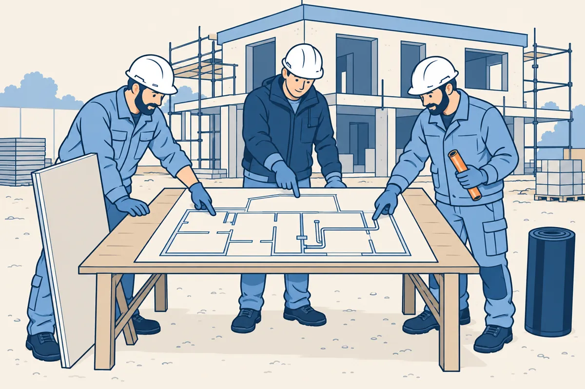
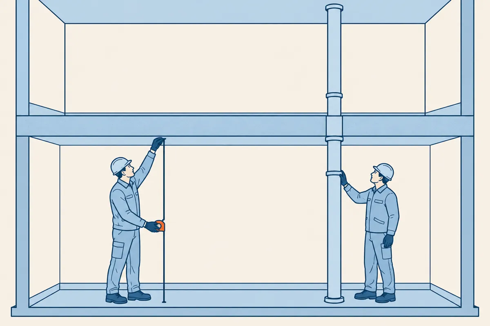
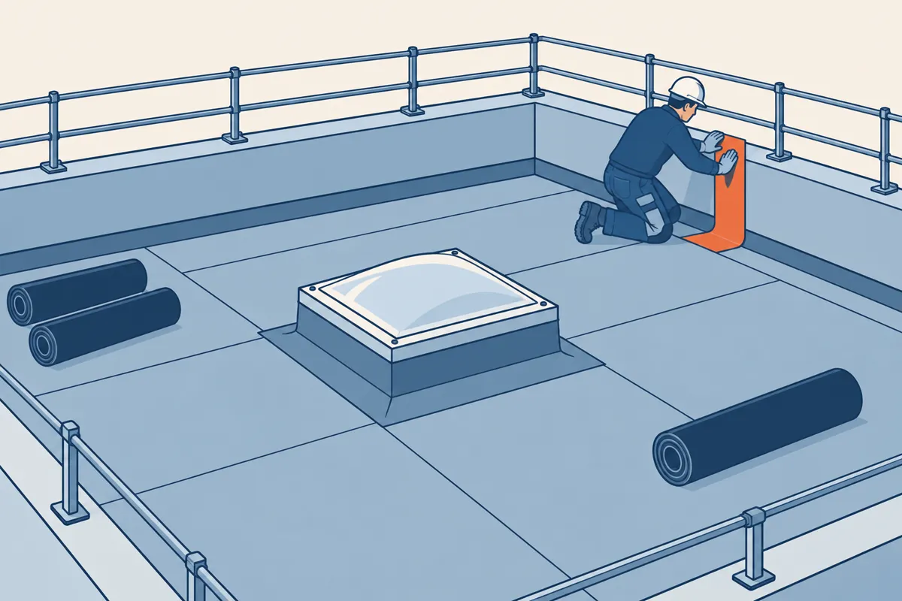
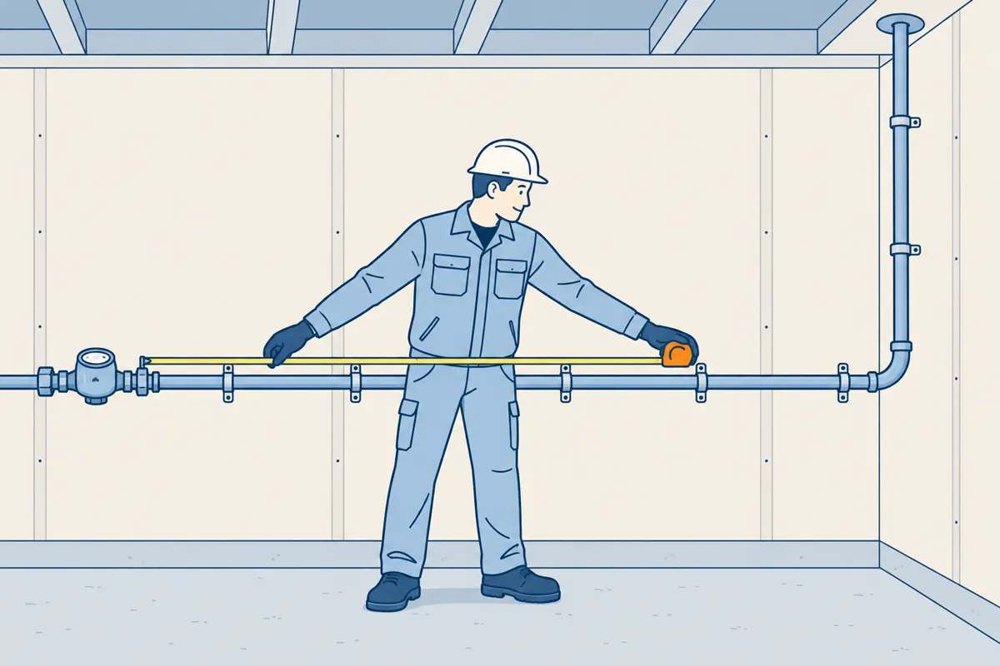

⬅ La carte du réseau · tronc commun · 1re année

Avant de commander ou de chiffrer, chaque métier relève des quantités sur le plan. Le plaquiste compte des mètres carrés de mur. L'étancheur compte des mètres carrés de toiture et des mètres de relevé. Le plombier compte des mètres de tube.
Environ 2 heures. À la fin, vous saurez :
Gardez une feuille et un crayon. Chaque calcul s'écrit avec son unité, et chaque résultat s'arrondit au centième. La calculatrice est autorisée.
Toute la gare s'appuie sur un petit bâtiment de deux niveaux, avec une toiture-terrasse. Son dossier contient quatre documents. Chaque donnée se lit dans un seul document.
| Vous cherchez | Vous lisez |
|---|---|
| la longueur d'un mur | le plan de niveau, dans la chaîne de cotes |
| une hauteur | la coupe |
| une fenêtre, une porte | le tableau des menuiseries |
| la toiture | le plan de toiture |
| Repère | Ouvrage | Largeur × hauteur (mm) | Mur |
|---|---|---|---|
| F1 | fenêtre | 1500 × 1200 | nord |
| P1 | porte | 900 × 2100 | sud |
Le dessin n'est pas à l'échelle. Les dimensions se lisent dans les cotes (gare 7).
Sur un plan de bâtiment, une cote est en millimètres (gare 7). Une surface et un volume se calculent en mètres. Pour passer des millimètres aux mètres, divisez par 1000 : la virgule recule de trois rangs.
| Cote sur le plan (mm) | En mètres |
|---|---|
| 4600 | 4,60 m |
| 1500 | 1,50 m |
| 200 | 0,20 m |
| 50 | 0,05 m |
La pièce A mesure 4600 sur 3200 mm. En mètres, elle mesure 4,60 m sur 3,20 m.
Multipliez des mètres. 4600 × 2500 donne 11 500 000 mm², un nombre inutilisable sur un chantier.
Une longueur de mur est souvent découpée en morceaux par une chaîne de cotes. La longueur du mur est la somme des cotes partielles. La cote totale, placée plus loin du mur, sert de contrôle (gare 7).
Mur nord de la pièce A : 1200 + 1500 + 1900 = 4600 mm.
La cote totale porte 4600 : la chaîne est juste. Le mur nord mesure 4,60 m.
Si la somme ne tombe pas sur la cote totale, une cote est fausse ou manque. Signalez-le avant de calculer.
La coupe donne plusieurs hauteurs. La hauteur sous plafond va du sol fini au plafond.
La hauteur d'étage va du sol d'un niveau au sol du niveau du dessus. Elle ajoute l'épaisseur du plancher.

Hauteur sous plafond : 2500 mm, soit 2,50 m.
Plancher : 200 mm, soit 0,20 m.
Hauteur d'étage : 2,50 + 0,20 = 2,70 m.
| Vous mesurez | Vous prenez la hauteur |
|---|---|
| un mur, une cloison, un doublage | sous plafond |
| le volume d'une pièce | sous plafond |
| un tube ou une gaine qui traverse le plancher | d'étage |
| un relevé d'étanchéité | du relevé, lue sur le détail de l'acrotère |
Une hauteur d'étage prise pour un mur ajoute 0,20 m sur toute sa longueur. La surface grossit d'environ 8 %.
La surface brute d'un mur est sa longueur multipliée par sa hauteur. On ne retire encore rien. Écrivez l'unité à chaque ligne.
Surface brute (m²) = longueur (m) × hauteur sous plafond (m)
Mur nord de la pièce A : 4,60 m × 2,50 m = 11,50 m².
Pour les quatre murs d'une pièce, prenez le tour de la pièce : 2 × (longueur + largeur). Multipliez ce tour par la hauteur sous plafond.
Tour de la pièce A : 2 × (4,60 + 3,20) = 15,60 m.
Quatre murs bruts : 15,60 × 2,50 = 39,00 m².
Un doublage recouvre un mur d'un isolant et d'une plaque de plâtre, sur une seule face. Une cloison sépare deux pièces : elle a deux faces. Une plaque sur chaque face demande deux fois la surface de la cloison.
Une ouverture est une fenêtre, une porte ou une porte-fenêtre. Ses dimensions se lisent dans le tableau des menuiseries, la largeur d'abord (gare 7). La surface nette est la surface brute moins les ouvertures.
Surface nette (m²) = surface brute (m²) − surfaces des ouvertures (m²)
Fenêtre F1 : 1500 × 1200 mm, soit 1,50 m × 1,20 m = 1,80 m².
Mur nord : 11,50 m² − 1,80 m² = 9,70 m².
Sur un chantier, la règle de déduction est écrite dans le descriptif ou donnée par la consigne. Dans cette gare, toutes les ouvertures se déduisent.
Exercice 1 · plâtrerie, isolation, peinture
Mur nord de la pièce A : 4,60 × 2,50 = 11,50 m², puis 11,50 − 1,80 = 9,70 m².
Une chambre de l'étage a un mur nord à doubler. Le plan donne sa chaîne de cotes et sa fenêtre F2. La coupe est celle du bâtiment d'exemple : 2500 sous plafond, plancher de 200.
| Repère | Ouvrage | Largeur × hauteur (mm) | Mur |
|---|---|---|---|
| F2 | fenêtre | 1200 × 1350 | nord |
Quelle est la surface nette du mur nord ?
3,90 × 2,50 = 9,75 m². Fenêtre : 1,20 × 1,35 = 1,62 m². 9,75 − 1,62 = 8,13 m². 9,75 m² oublie la fenêtre, 11,37 m² l'ajoute au lieu de la retirer, 8,91 m² prend la hauteur d'étage.
Sur une toiture-terrasse, l'étanchéité couvre la surface comprise entre les acrotères. Un acrotère est le muret qui borde la toiture.
Une émergence traverse la toiture : un lanterneau, une sortie de gaine. Sa surface se retire de la surface de la toiture.
Le relevé remonte l'étanchéité sur les acrotères et autour de chaque émergence. Il se compte en mètres, sur le tour. Une émergence retire donc de la surface et ajoute du relevé.

Tour d'un rectangle = 2 × (longueur + largeur). Tour d'un carré = 4 × côté.
La hauteur développée du relevé est sa hauteur mesurée en suivant la membrane. Le dossier la donne dans le détail de l'acrotère, un dessin à grande échelle du bord de la toiture.
Surface brute : 8,00 m × 6,50 m = 52,00 m².
Émergences : 1,00 × 1,00 = 1,00 m² et 0,50 × 0,50 = 0,25 m², soit 1,25 m².
Surface nette : 52,00 − 1,25 = 50,75 m².
Relevé des acrotères : 2 × (8,00 + 6,50) = 29,00 m.
Relevé des émergences : 4 × 1,00 = 4,00 m et 4 × 0,50 = 2,00 m.
Relevé total : 29,00 + 4,00 + 2,00 = 35,00 m.
Hauteur développée : 300 mm, soit 0,30 m. Surface de relevé : 35,00 × 0,30 = 10,50 m².
Exercice 2 · étanchéité
L'exemple est sur l'écran de la toiture.
Une toiture-terrasse mesure 9400 × 7000 mm entre les acrotères. Un lanterneau de 1200 × 1200 mm la traverse.
Combien de mètres de relevé faut-il compter ?
2 × (9,40 + 7,00) = 32,80 m. Lanterneau : 4 × 1,20 = 4,80 m. Total : 37,60 m. 32,80 m oublie le lanterneau, 16,40 m ne compte qu'une longueur et une largeur, 28,00 m retire le lanterneau au lieu de l'ajouter.

Un tube se compte en mètres, morceau par morceau. Les morceaux horizontaux se lisent dans les chaînes de cotes. La montée se lit sur la coupe.
La montée traverse le plancher. Elle prend donc la hauteur d'étage : la hauteur sous plafond plus le plancher.
Dans cette gare, le tube se compte dans son axe, sans les coudes. Les deux parcours horizontaux sont à la même hauteur au-dessus de leur sol : la montée vaut la hauteur d'étage.
Rez-de-chaussée : 1800 + 1400 = 3200 mm, soit 3,20 m.
Montée : 2,50 + 0,20 = 2,70 m.
Étage : 1300 + 800 = 2100 mm, soit 2,10 m.
Longueur de tube : 3,20 + 2,70 + 2,10 = 8,00 m.
Exercice 3 · plomberie, chauffage, froid
L'exemple n'est plus rappelé. Les aides restent là si vous bloquez.
Une alimentation d'eau part du compteur, au rez-de-chaussée, et monte au lavabo de l'étage. Les deux parcours sont à la même hauteur au-dessus de leur sol. L'élévation donne les parcours et la coupe.
Quelle longueur de tube faut-il compter ?
2100 + 1500 = 3600 mm, soit 3,60 m. Montée : 2,70 m. Étage : 1,80 m. Total : 8,10 m. 7,90 m prend la hauteur sous plafond pour la montée, 5,40 m oublie la montée, 8,30 m compte le plancher deux fois.
Le volume d'une pièce est sa surface au sol multipliée par sa hauteur sous plafond. Il sert au calcul du chauffage et de la ventilation.
Volume (m³) = surface (m²) × hauteur ou épaisseur (m)
Surface au sol de la pièce A : 4,60 × 3,20 = 14,72 m².
Volume : 14,72 m² × 2,50 m = 36,80 m³.
Une couche de matériau a aussi un volume : l'isolant d'une toiture, une chape. Son volume est sa surface multipliée par son épaisseur. L'épaisseur est souvent donnée en millimètres : passez-la en mètres d'abord.
Isolant de la toiture d'exemple, posé sur la surface nette : 120 mm, soit 0,12 m.
Volume : 50,75 m² × 0,12 m = 6,09 m³.
Avant de rendre un métré, relisez-le avec trois contrôles.
Répondez à tout, votre score s'affiche en bas. Les trois dernières questions regardent vers un métier : faites celle du vôtre, ou les trois.
Vous savez passer une cote en mètres, additionner une chaîne, choisir la hauteur, passer du brut au net, et calculer une longueur de réseau et un volume.
Télécharger l'exercice papier (PDF)
Pour l'enseignant, le corrigé est dans corrige.pdf. L'exercice fait relever, sur un deuxième bâtiment, les murs d'une salle, une toiture et ses relevés, un réseau et deux volumes.
Gare suivante : le croquis coté, gare 8. En deuxième année, les lignes de métier reprennent ces gestes pour compter des plaques et des rouleaux.